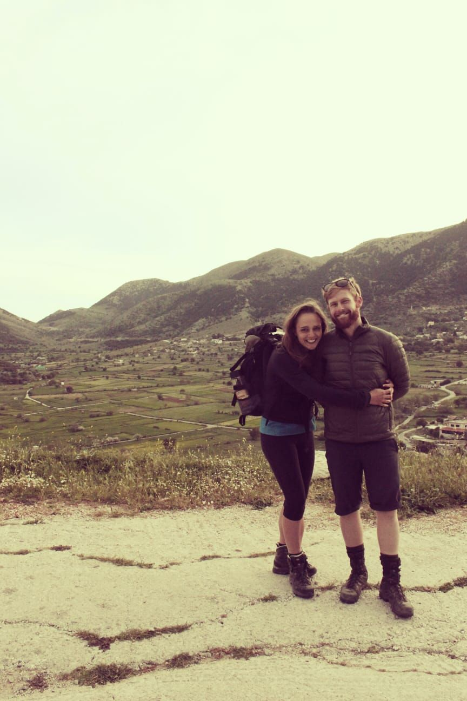
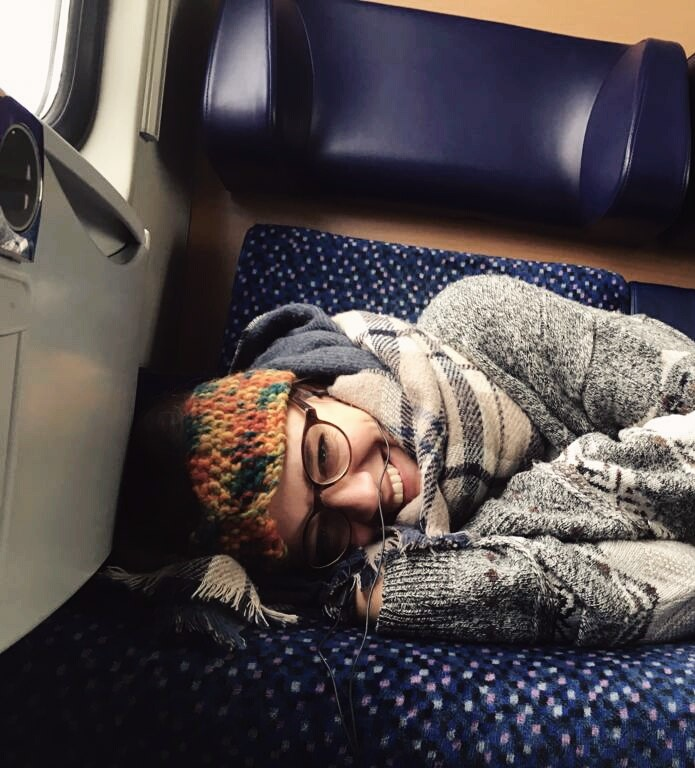
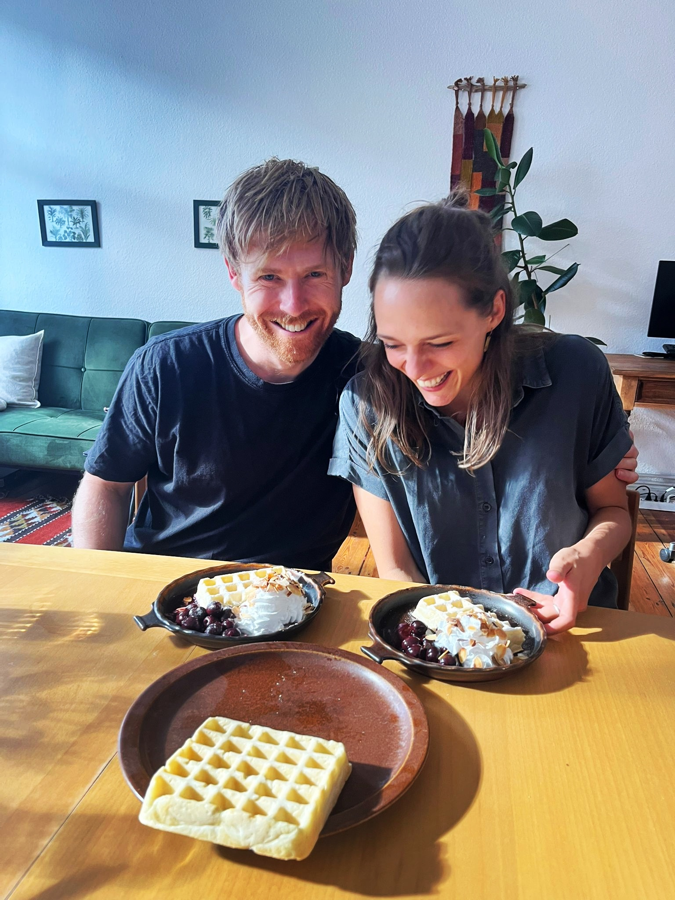

Our story began on the streets of Budapest, when Janna passed Ben on the street before doubling back and introducing herself with a paper map in hand, which Ben found deeply endearing. Our first date took place the very next day, when Janna invited Ben to a cemetery. Where else would a great romance begin? Over the next few months there were long afternoons studying in dubiously decorated university computer rooms, shared dinners at each other’s apartments (one of the only times Janna voluntarily offered to cook). We also went on our first hike together in the Buda Hills, unaware that it would be the first of many outings involving mountains, questionable weather decisions, and an optimistic underestimation of distances.

Lesvos 2019
The second semester of our master’s degree took us to the island of Lesvos, a move that was more than just geographic, as it also marked the moment we began living together. This brought new experiences, like doing the weekly food shop side by side, although this did not last long, as Ben quickly learned that Janna “helping” with the shopping usually substantially increased the total time required. Much more exciting was our first real holiday together, hiking between coastal towns in Crete with friends, spending long days on steep climbs, fueled by trail mix, and with Janna’s primary form of sun protection being a button-up shirt converted into a headscarf.
Manchester 2019
The next destination was Manchester, which, despite being a brief sojourn, provided more than enough rain for two lifetimes. Janna was baffled by the native Mancunians’ seeming inability to understand her, but was reassured when Ben confirmed that this was more a “them” problem than anything to do with her. This period also marked the beginning of Ben’s great love story with R and coding, a relationship that became very serious very quickly. Ironically, Janna’s strongest moment of appreciation for the rugged landscapes of northern England came only when we were on the train leaving Manchester behind.
Back to Budapest 2020
Our return to Budapest in time to enjoy a glorious spring was somewhat thwarted by the arrival of COVID. Suddenly, life shrank to a small apartment and the writing of our theses in isolation. The daily highlight became an expedition to the nearby supermarket to buy a vegan Magnum, which was then eaten in the small adjacent park. Although, even this was soon brought to an abrupt end, as we watched from our window while the police chained the park gates shut, to the dismay of a crowd of onlooking children. Yet all that time together strengthened our relationship, in part through strange indoor projects such as attempting to construct a Rube Goldberg machine to record an elaborate birthday message for a friend (only to give up after about an hour once we realized that building such a thing is incredibly difficult).
Zürich 2020
In 2020, both of us were fortunate enough to find PhD positions starting nearly at the same time in Zurich, although it must be said that Janna was far more proactive, while Ben’s came more through luck. After years in cities that were lovable but somewhat down at the heel, Zürich felt like another world, with pristine waterways running through the center and streets so clean you could eat off them. Many weekends were spent taking increasingly long train journeys to hike in the mountains, often surprised and underprepared for the weather at altitude. At some point, Janna decided that the ivory tower of academia was not for her and chose to leave her PhD behind in order to have more impact in the real world.

The half way between years
Janna started a new job in Berlin, while Ben continued in Zurich. Two years of long-distance journeys back and forth followed, with Deutsche Bahn playing a tempestuous third wheel in our relationship. Countless hours were spent in purgatory on train platforms, waiting for delayed trains throughout Germany (never in Switzerland, of course). Far from being “wilderness years,” this period instead deepened our appreciation for the time we did get to spend together. And without Ben to do the cooking, Janna also rediscovered her love of “girl dinner” and eating chickpeas straight from the can.

Berlin 2024
Now calling Berlin home, we continue our journey together. From the vibrant art scene to the beautiful parks, this city has become the perfect place to start our next chapter.
We are excited to celebrate our wedding with you at the beautiful Farmhouse Wandlitz, located just outside of Berlin. Below you can find a map to help you find the venue. If you are travelling via Public transport from Berlin the Basdorf station is the closest stop, from there it is a 8 minute walk to the venue.